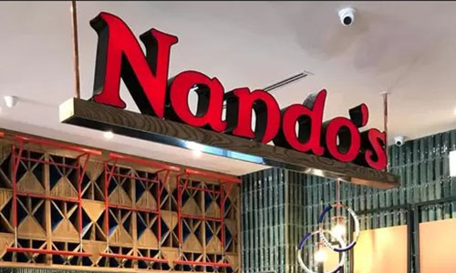
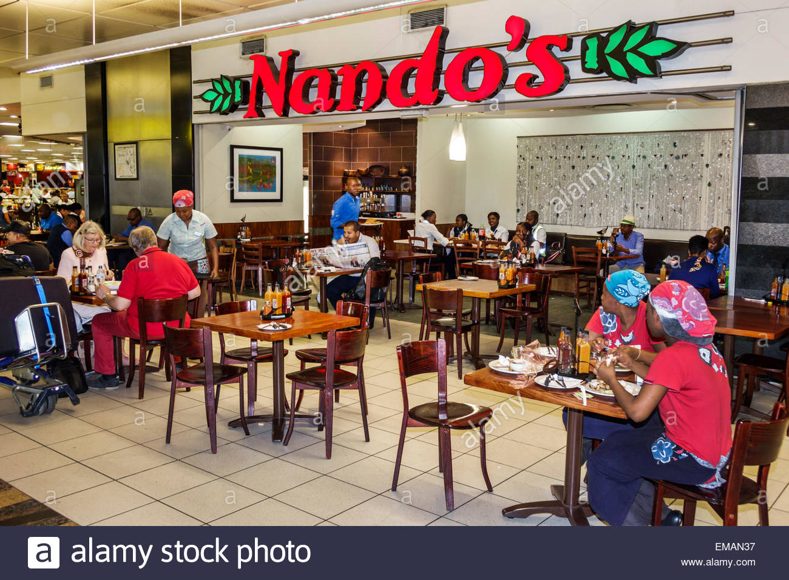
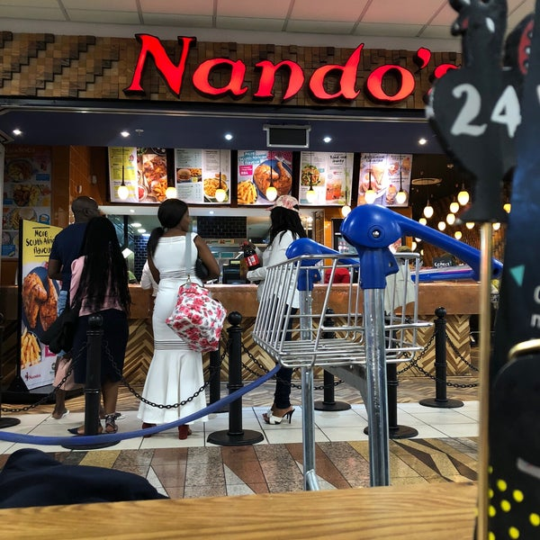

Nando's is a South African restaurant chain that specialises in Portuguese-African food, including its signature flame-grilled peri-peri style chicken. Founded in Johannesburg in 1987, Nando's operates over 1,000 outlets in 35 countries. Their logo is the famous Portuguese symbol, the Rooster of Barcelos.
The restaurant was founded in 1987 in the Johannesburg suburb Rosettenville, by Mozambique-born Fernando Duarte and South African-born Robert Brozin
  